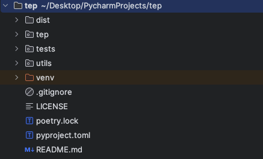
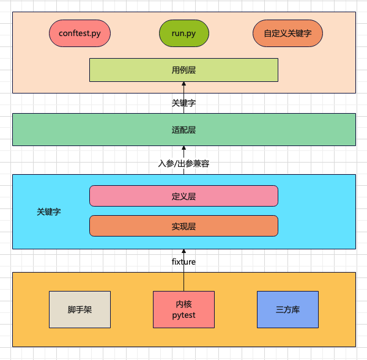
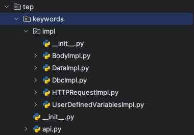
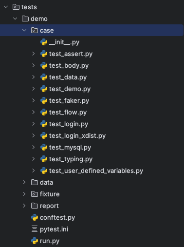
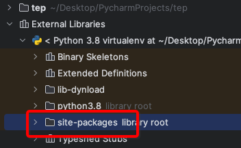
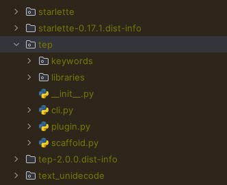

本书作者：测试开发刚哥，文章版权归个人所有，未经授权请勿转载。
温馨提示：开发指南，根据 V2.0.0 编写，不随版本更新维护，仅供入门参考。最新实现请结合教程和源码阅读，教程会在版本发布后维护。
环境准备
- 安装 Python，3.8 以上版本
- 安装 poetry 包管理工具，
pip install poetry - 克隆代码，
git clone ``https://github.com/dongfanger/tep
准备就绪，撸起袖子干！
目录结构

- dist
poetry build生成目标文件，用于发布 pypi - tep 核心代码
- tests 测试代码
- utils 工具包
- venv 虚拟环境
- .gitignore 忽略上传 git
- LICENSE 证书
- poetry.lock 版本锁定
- pyproject.toml 配置信息
- README.md 说明文件
poetry 命令
初始化：poetry init
添加包：poetry add pytest
移除包：poetry remove pytest
安装包：poetry install --only main
构建包：poetry build
发布包：poetry publish
poetry 管理包信息可以在pyproject.toml文件中查看：
[tool.poetry.dependencies]
python = "^3.8"
faker = "^4.1.1"
urllib3 = "^2.0.7"
requests = "^2.22.0"
pyyaml = "^5.4.1"
pytest-assume = "^2.4.2"
loguru = "^0.4.1"
fastapi = "^0.72.0"
uvicorn = "^0.17.0"
pydantic = "^1.9.0"
pytest = "^7.1.1"
pytest-xdist = "^3.1.0"
filelock = "^3.8.2"
jsonpath = "^0.82"
pymysql = "^1.1.0"
pytest-html = "^4.0.2"
allure-pytest = "^2.13.2"
allure-python-commons = "^2.13.2"
指定国内镜像：
[[tool.poetry.source]]
name = "tsinghua"
priority = "default"
url = "https://pypi.tuna.tsinghua.edu.cn/simple"
注册命令行：
[tool.poetry.scripts]
tep = "tep.cli:main"
添加插件以调用 pytest hook：
[tool.poetry.plugins."pytest11"]
"tep" = "tep.plugin:Plugin"
框架设计

框架内核是 pytest，为框架提供了用例识别、组织运行、IDE 集成等基础能力，以及 pytest 框架稳定性和强劲扩展能力。同时集成了 requests 等三方库，支持接口测试等。并实现了项目脚手架。
关键字驱动是通过 pytest fixture 特性来实现的，主要借助它实现：①测试前后置处理，②无需 import 就能使用，③PyCharm 语法提示。这是 fixture 函数相比于普通函数的优势。关键字分为定义层和实现层，定义层是关键字契约，实现层负责具体逻辑实现。
适配层做了向下兼容，通过参数转换确保用例层使用的关键字，不会受迭代升级变化影响，使用者无感知，所有变化都有框架内部处理和兼容。
在项目内通过 conftest.py 跟框架进行连接，比如路径查找，插件加载等，同时定义 run.py 执行入口。也可以在项目中自定义关键字。
命令行实现
通过 poetry 注册在 pyproject.toml
[tool.poetry.scripts]
tep = "tep.cli:main"
tep/cli.py的 main 函数与之对接。
#!/usr/bin/python
## encoding=utf-8
import argparse
import sys
from tep import __description__, __version__
from tep.scaffold import scaffold
def main():
parser = argparse.ArgumentParser(description=__description__)
parser.add_argument("-v", "--version", dest="version", action="store_true", help="show version")
parser.add_argument("-s", "--startproject", metavar='project_name', type=str, help="Create a new project with template structure")
parser.add_argument("-venv", dest="create_venv", action="store_true", help="Create virtual environment in the project, and install tep")
if len(sys.argv) == 1:
# tep
parser.print_help()
sys.exit(0)
elif len(sys.argv) == 2:
if sys.argv[1] in ["-v", "--version"]:
print(f"Current Version: V{__version__}")
print(r"""
____o__ __o____ o__ __o__/_ o__ __o
/ \ / \ <| v <| v\
\o/ < > / \ <\
| | \o/ o/
< > o__/_ |__ _<|/
| | |
o <o> <o>
<| | |
/ \ / \ _\o__/_ / \
""")
elif sys.argv[1] in ["-h", "--help"]:
parser.print_help()
elif sys.argv[1] in ["-s", "--startproject"]:
parser.print_help()
sys.exit(0)
args = parser.parse_args()
if sys.argv[1] in ["-s", "--startproject"]:
scaffold(args)
通过 argparse 库实现命名行参数。判断是-s时，调用scaffold(args)创建脚手架。
脚手架实现
tep/scaffold.py
创建文件夹和创建文件：
def create_folder(path):
os.makedirs(path)
msg = f"Created folder: {path}"
print(msg)
def create_file(path, file_content=""):
with open(path, "w", encoding="utf-8") as f:
f.write(file_content)
msg = f"Created file: {path}"
print(msg)
根据文件内容，通过字符串填充。
识别到-venv参数时创建虚拟环境：
if Config.CREATE_ENV:
# Create Python virtual Environment
os.chdir(project_name)
print("\nCreating virtual environment")
os.system("python -m venv .venv")
print("Created virtual environment: .venv")
# Install tep in the Python virtual Environment
print("Installing tep")
if platform.system().lower() == 'windows':
os.chdir(".venv")
os.chdir("Scripts")
os.system("pip install tep")
elif platform.system().lower() == 'linux':
os.chdir(".venv")
os.chdir("bin")
os.system("pip install tep")
关键字实现
tep/keywords目录下，定义在api.py，实现在impl里面：

api 是关键字契约，以 HTTPRequestKeyword 为例：
@pytest.fixture(scope="session")
def HTTPRequestKeyword():
def _function(*args, **kwargs) -> Result:
method, url, kwargs = Args.parse(["method", "url"], args, kwargs)
return HTTPRequestImpl(method, url, **kwargs)
return _function
关键字是一个 fixture 函数，在函数内部定义了另外一个函数，然后把内部函数的函数名 return 了，当调用这个 fixture 函数时，使用使用的是 fixture 的 return，也就是内部函数名，就相当于是在调内部函数了。这是 pytest fixture 的特性，不用管为什么，就这么用就对了。
api 也是适配层，在内部函数中，对参数做了转换，用到了 Args 类：
class Args:
@classmethod
def parse(cls, fields: list, args: tuple, kwargs: dict) -> tuple:
# Parse fixed args
results = []
for i, field in enumerate(fields):
if i < len(args):
results.append(args[i])
else:
value = kwargs.get(field, None)
if value:
results.append(value)
# Args comes from kwargs, pop the key
kwargs.pop(field)
results.append(kwargs)
return tuple(results)
根据 fields，从 args 和 kwargs 中解析出入参，然后传入关键字实现，比如这里解析了 method 和 url 两个入参，传入 HTTPRequestImpl 函数。
同时内部函数返回类型都是 Result 对象：
class Result:
# Http request, response
response: TepResponse = None
# Any data
data: Any = None
# Connect database, connection
conn = None
# Connect database, cursor
cursor = None
所有关键字的返回类型都封装在这里，基本类型就传入 data，特殊类型就显式定义，比如接口请求响应就定义为response: TepResponse。确保后续如果关键字要新增返回值，也不会影响老代码。
关键字实现在 impl 包里面，有的关键字实现复杂，有的关键字实现简单。
复杂的：HTTPRequestImpl、BodyImpl
简单的：UserDefinedVariablesImpl、DataImpl、DbcImpl
def UserDefinedVariablesImpl(*args, **kwargs) -> Result:
file_path = os.path.join(Config().DATA_DIR, "UserDefinedVariables.yaml")
result = Result()
result.data = File(file_path).load()
return result
篇幅有限，关键字实现细节请阅读源码。所有关键字都在tests/demo/case编写了测试代码：

参数化实现
先看测试代码，tests/demo/case/test_body.py：
import json
from loguru import logger
def test(BodyKeyword):
body = r"""{"id":1,"param":"[{\"page\": 1, \"pinList\":[\"cekaigang\"]}]","ext1":{"a":1,"b":1},"ext2":[1,1,1],"ext3":{"name":"pytest"}}"""
ro = BodyKeyword(body, {"$.id": 9, "$.param[0].page": 9, "$.param[0].pinList[0]": "dongfanger", "$.ext1.a": 9, "$.ext2[0]": 9, "$.ext2[2]": 9, "$.ext3.name": "tep"})
body = ro.data
logger.info(json.dumps(body, ensure_ascii=False))
将 JSON 字符串按照 JSONPath 匹配后修改值。
JMeter 是直接在字符串中通过${}这种语法来做的，在写 Python 代码时这样做会有点复杂，难以处理。比如，可以用 format 或者 f-string 来做，如果%s和{}跟 JSON 内容不冲突是可以的，冲突了就参数化失败了。所以这里采用 JSONPath 来实现。
tep/keywords/impl/BodyImpl.py，比较复杂，实现思路：
- JSONPath 转换为字典中括号取值
- 递归遍历 JSON，如果识别到是 str 类型，那么尝试转换为 JSON 继续遍历
- 遍历到最后一层时，将值进行替换
#!/usr/bin/python
## encoding=utf-8
import json
import re
from typing import Any
from tep.libraries.Result import Result
def BodyImpl(json_str: str, expr: dict) -> Result:
json_obj = json.loads(json_str)
for json_path, value in expr.items():
_assign(json_obj, json_path, value)
result = Result()
result.data = json_obj
return result
def _jsonpath_to_dict_expr(jsonpath: str) -> str:
"""
Input: $.store.book[0].title
Output: '["store"]["book"][0]["title"]'
"""
tokens = re.findall(r'\.(\w+)|\[(\d+)\]', jsonpath)
expr = ''
for token in tokens:
if token[0]:
expr += '["{}"]'.format(token[0])
else:
expr += '[{}]'.format(token[1])
return expr
def _parse_dict_expr(expr: str) -> list:
"""
Input: '["store"]["book"][0]["title"]'
Output: ['store', 'book', 0, 'title']
"""
tokens = re.findall(r'\["(.*?)"\]|\[(\d+)\]', expr)
result = [int(index) if index.isdigit() else name for name, index in tokens]
return result
def _nested_modify(json_obj: [dict, list], keys: list, value: Any, current_level: int = 0):
if current_level == len(keys) - 1:
json_obj[keys[current_level]] = value
else:
current_key = keys[current_level]
# Nested string json {"id": 1, "param": "{\"page\": 1}"}
if isinstance(json_obj[current_key], str):
# str to json
current_value = json.loads(json_obj[current_key])
if isinstance(current_value, dict) or isinstance(current_value, list):
nested_string_json_obj = current_value
_nested_modify(nested_string_json_obj, keys[current_level + 1:], value)
# json to str
json_obj[current_key] = json.dumps(nested_string_json_obj, ensure_ascii=False)
else:
_nested_modify(json_obj[current_key], keys, value, current_level + 1)
def _assign(json_obj: [dict, list], json_path: str, value: Any):
dict_expr = _jsonpath_to_dict_expr(json_path)
keys = _parse_dict_expr(dict_expr)
_nested_modify(json_obj, keys, value)
执行入口
from tep.libraries.Run import Run
if __name__ == '__main__':
settings = {
"path": ["test_demo.py"], # Path to run, relative path to case
"report": False, # Output test report or not
"report_type": "pytest-html" # "pytest-html" "allure"
}
Run(settings)
通过 Run 类实现：
class Run:
def __init__(self, *args, **kwargs):
os.system(Cmd(*args).pytest())
也就是os.system执行命令。命令由 Cmd 类拼装：
class Cmd:
template = "pytest -s {where_to_run} {tep_report}"
def __init__(self, *args, **kwargs):
settings = args[0]
self.RUN_PATH = [os.path.join(Config().CASE_DIR, path) for path in settings["path"]]
self.RUN_REPORT = settings["report"]
self.RUN_REPORT_TYPE = settings["report_type"]
def pytest(self) -> str:
cmd = self.template.format(
where_to_run=" ".join(self.RUN_PATH),
tep_report=self.tep_report()
)
return cmd
def tep_report(self) -> str:
if self.RUN_REPORT:
if self.RUN_REPORT_TYPE == "pytest-html":
return f"--html={Config().HTML_REPORT_PATH}.html --self-contained-html"
elif self.RUN_REPORT_TYPE == "allure":
return "--tep-reports"
return ""
根据 settings 解析出运行配置，拼装到 pytest 命令行。
路径查找
做框架必须要解决的一个问题是，怎么在框架查找到项目路径。因为通过 pip install 安装后，框架代码是放在 site-packages 里面的：


跟项目本地目录没在一块，框架要查找 case、data、report 目录就要先知道项目根目录。
tep 框架是基于 pytest 的，pytest 会先加载 conftest.py，所以在这个文件将项目根目录告诉框架。
from tep.plugin import tep_plugins
pytest_plugins = tep_plugins()
tep_plugins()在tep/plugin.py中实现：
def tep_plugins():
"""
Must be placed at the top, execute first to initialize base dir
"""
caller = inspect.stack()[1]
Config.BASE_DIR = os.path.abspath(os.path.dirname(caller.filename))
plugins = _keyword_path() + _fixture_path() # +[other plugins]
return plugins
通过 inpect 反查调用者，从而获取到 conftest.py 的路径，再查到项目根目录。再将路径存入 Config 类：
class Config:
# Class variable initialize first
BASE_DIR = ""
# Constant
CREATE_ENV = False
# The temporary directory of the allure source file, which is a pile of JSON files,
# will be deleted when generating HTML reports
ALLURE_SOURCE_PATH = ".allure.source.temp"
def __init__(self):
# Instance variable initialize after class variable assigned
self.CASE_DIR = os.path.join(self.BASE_DIR, "case")
self.DATA_DIR = os.path.join(self.BASE_DIR, "data")
self.REPORT_DIR = os.path.join(self.BASE_DIR, "report")
current_time = time.strftime("%Y-%m-%d-%H-%M-%S", time.localtime(time.time()))
self.HTML_REPORT_PATH = os.path.join(self.REPORT_DIR, "report-" + current_time)
Config 类包含了 tep 框架本身的配置信息。
需要特别注意类变量和实例变量的区别，这里将 BASE_DIR 定义为类变量，也就是一开始就初始化。而将 CASE_DIR、DATA_DIR、REPORT_DIR 定义为实例变量，一开始不初始化，等到类变量初始化以后，在实例化对象时赋值。也是就说，Config.BASE_DIR类变量赋值，Config().CASE_DIR实例为对象后取值。否则可能出现这样的问题：假如将 CASE_DIR 也定义为类变量，在某个地方先于 tep_plugins()时调用了 Config.CASE_DIR，那么此时 BASE_DIR 是空的，就拿不到项目路径。毕竟 Python 的 import 也会执行代码，然后是从上往下执行，保不齐哪里会出问题。
为了代码健壮，一是按照类变量和实例变量分别定义，二是将tep_plugins()定义放在文件最上面。
fixture 识别
同样是在 tep_plugins()中加载的，返回 import 路径列表传入 conftest.py 中的pytest_plugins，这是 pytest 语法，能加载到 fixture。
import 路径列表：
def _keyword_path() -> list:
return ["tep.keywords.api"]
def _fixture_path():
_fixture_dir = os.path.join(Config.BASE_DIR, "fixture")
paths = []
# 项目下的fixtures
for root, _, files in os.walk(_fixture_dir):
for file in files:
if file.startswith("fixture_") and file.endswith(".py"):
full_path = os.path.join(root, file)
import_path = full_path.replace(_fixture_dir, "").replace("\\", ".")
import_path = import_path.replace("/", ".").replace(".py", "")
paths.append("fixture" + import_path)
return paths
一个是 tep 自身路径tep.keywords.api模块，一个是项目路径fixture下以fixture_开头模块。
Allure 报告
在 pyproject.toml 中配置：
[tool.poetry.plugins."pytest11"]
"tep" = "tep.plugin:Plugin"
Plugin 中就能写 pytest hook：
class Plugin:
@staticmethod
def pytest_addoption(parser):
"""
Allure test report, command line parameters
"""
parser.addoption(
"--tep-reports",
action="store_const",
const=True,
help="Create tep allure HTML reports."
)
@staticmethod
def pytest_configure(config):
"""
Reference: https://github.com/allure-framework/allure-python/blob/master/allure-pytest/src/plugin.py
In order to generate an allure source file for generating HTML reports
"""
if _tep_reports(config):
if os.path.exists(Config.ALLURE_SOURCE_PATH):
shutil.rmtree(Config.ALLURE_SOURCE_PATH)
test_listener = AllureListener(config)
config.pluginmanager.register(test_listener)
allure_commons.plugin_manager.register(test_listener)
config.add_cleanup(cleanup_factory(test_listener))
clean = config.option.clean_alluredir
file_logger = AllureFileLogger(Config.ALLURE_SOURCE_PATH, clean) # allure_source
allure_commons.plugin_manager.register(file_logger)
config.add_cleanup(cleanup_factory(file_logger))
@staticmethod
def pytest_sessionfinish(session):
"""
Generate an allure report after the test run ends
"""
reports_path = os.path.join(Config.BASE_DIR, "reports")
if _tep_reports(session.config):
if _is_master(session.config): # Generate reports only at the master node
# Historical data from the latest report, filling in the allure trend chart
if os.path.exists(reports_path):
his_reports = os.listdir(reports_path)
if his_reports:
latest_report_history = os.path.join(reports_path, his_reports[-1], "history")
shutil.copytree(latest_report_history, os.path.join(Config.ALLURE_SOURCE_PATH, "history"))
os.system(f"allure generate {Config.ALLURE_SOURCE_PATH} -o {Config().HTML_REPORT_PATH} --clean")
shutil.rmtree(Config.ALLURE_SOURCE_PATH)
pytest_addoption 添加了--tep-reports参数。
pytest_configure 生成 allure 源文件。
pytest_sessionfinish 在测试结束后将源文件转成 HTML 报告。
额外做了 2 个增强：一是根据历史报告填充趋势图，二是在 pytest-xdist 分布式执行时只生成一份报告。
内部库
其他内部库一览。
TepResponse，封装了 requests.Response，添加了 jsonpath 方法
#!/usr/bin/python
## encoding=utf-8
import jsonpath
from requests import Response
class TepResponse(Response):
"""
Inherit on requests.Response, adding additional methods
"""
def __init__(self, response):
super().__init__()
for k, v in response.__dict__.items():
self.__dict__[k] = v
def jsonpath(self, expr: str):
"""
Force the first value here for simple values
If complex values are taken, it is recommended to use jsonpath native directly
"""
return jsonpath.jsonpath(self.json(), expr)[0]
File，读取 YAML/JSON 文件：
#!/usr/bin/python
## encoding=utf-8
import json
import os
import yaml
class File:
def __init__(self, path: str):
self.path = path
def load(self) -> [dict, list]:
file_type = self._file_type()
if file_type in [".yml", ".yaml", ".YML", "YAML"]:
return self._yaml_load()
if file_type in [".json", ".JSON"]:
return self._json_load()
def _file_type(self) -> str:
return os.path.splitext(self.path)[-1]
def _yaml_load(self) -> [dict, list]:
with open(self.path, encoding="utf8") as f:
return yaml.load(f.read(), Loader=yaml.FullLoader)
def _json_load(self) -> [dict, list]:
with open(self.path, encoding="utf8") as f:
return json.load(f)
DB，执行数据库 sql
from loguru import logger
class DB:
@classmethod
def pymysql_execute(cls, conn, cursor, sql):
try:
cursor.execute(sql)
conn.commit()
except Exception as e:
logger.error(f"Database execute error: {e}")
conn.rollback()
数据库连接是在自定义关键字 mysql_execute 中实现的：
tests/demo/fixture/fixture_mysql.py
import pytest
from tep.libraries.DB import DB
from tep.libraries.Result import Result
@pytest.fixture(scope="session")
def mysql_execute(DbcKeyword):
ro = DbcKeyword(host="127.0.0.1", port=3306, user="root", password="12345678", database="sys")
conn = ro.conn
def _function(sql: str) -> Result:
cursor = conn.cursor()
DB.pymysql_execute(conn, cursor, sql)
ro = Result()
ro.cursor = cursor
return ro
yield _function
conn.close() # After test, close connection
这里就利用了 fixture 的前后置特性，yield 前是测试前置操作，yield 后是测试后置操作。测试前连接数据库，测试后关闭数据库连接。scope="session"可以配置是整个会话期间都只连接一次，还是按其他维度进行连接和关闭。
Mock 服务
tests/scripts/mock.py
使用 FastAPI 实现了简单后端服务，Mock 从登录到下单接口：
import uvicorn
from fastapi import FastAPI, Request
app = FastAPI()
@app.post("/login")
async def login(req: Request):
body = await req.json()
if body["username"] == "dongfanger" and body["password"] == "123456":
return {"Cookie": "de2e3ffu29"}
return ""
@app.get("/searchSku")
def search_sku(req: Request):
if req.headers.get("Cookie") == "de2e3ffu29" and req.query_params.get("skuName") == "book":
return {"skuId": "222", "price": "2.3"}
return ""
@app.post("/addCart")
async def add_cart(req: Request):
body = await req.json()
if req.headers.get("Cookie") == "de2e3ffu29" and body["skuId"] == "222":
return {"skuId": "222", "price": "2.3", "skuNum": 3, "totalPrice": "6.9"}
return ""
@app.post("/order")
async def order(req: Request):
body = await req.json()
if req.headers.get("Cookie") == "de2e3ffu29" and body["skuId"] == "222":
return {"orderId": "333"}
return ""
@app.post("/pay")
async def pay(req: Request):
body = await req.json()
if req.headers.get("Cookie") == "de2e3ffu29" and body["orderId"] == "333":
return {"success": "true"}
return ""
if __name__ == '__main__':
uvicorn.run("mock:app", host="127.0.0.1", port=5000)
工具包
Pairwise.py，根据多个条件生成两两组合过滤后的结果集，适用于查询条件组合验证。
import copy
import itertools
from sys import stdout
from loguru import logger
def parewise(option: list) -> list:
"""
Automatically generate composite use cases
"""
cp = [] # Cartesian product
s = [] # Split in pairs
for x in eval('itertools.product' + str(tuple(option))):
cp.append(x)
s.append([i for i in itertools.combinations(x, 2)])
logger.info('Cartesian product:%s' % len(cp))
del_row = []
print_progress_bar(0)
s2 = copy.deepcopy(s)
for i in range(len(s)): # Match each line of use cases
if (i % 100) == 0 or i == len(s) - 1:
print_progress_bar(int(100 * i / (len(s) - 1)))
t = 0
# Judge whether the pairwise splitting of each line of use cases appears in other lines
for j in range(len(s[i])):
flag = False
for i2 in [x for x in range(len(s2)) if s2[x] != s[i]]: # Find the same column
if s[i][j] == s2[i2][j]:
t = t + 1
flag = True
break
# The same column was not found, so there's no need to search for the remaining columns
if not flag:
break
if t == len(s[i]):
del_row.append(i)
s2.remove(s[i])
res = [cp[i] for i in range(len(cp)) if i not in del_row]
logger.info('After filtering:%s' % len(res))
return res
def print_progress_bar(i):
c = int(i / 10)
progress = '\r %2d%% [%s%s]'
a = '■' * c
b = '□' * (10 - c)
msg = progress % (i, a, b)
stdout.write(msg)
stdout.flush()
if __name__ == '__main__':
pl = [['M', 'O', 'P'], ['W', 'L', 'I'], ['C', 'E']]
res = parewise(pl)
print()
for x in res:
print(x)
SimplifyJSON.py，简化 JSON 为一行，因为 tep 是把 JSON 放文件里面的，为了看起来清爽，代码规范是尽量放一行，JSON 可以使用此工具压缩。
import json
def simplify_json(json_str: str) -> str:
data = json.loads(json_str)
return json.dumps(data, separators=(',', ':'))
if __name__ == '__main__':
json_str = r"""
{
"orderId": 1,
"payAmount": "0.2"
}
"""
print(simplify_json(json_str))
压缩后如果 JSON 还特别长，可以格式化代码，PyCharm 会根据宽度设置自动换行。如果觉得压缩了不好看，想查看 JSON 展开效果，使用 json.cn 网站更快。关于压缩 JSON 这点，也算是在代码阅读性和 JSON 阅读性之间做的妥协，可以视情况调整。
本地调试
tests/demo就是一个示例项目，项目脚手架生成的项目是子集。该示例项目包含了所有关键字测试代码，工具测试代码，和其他测试场景代码。项目脚手架只包含最基础的结构文件。
可以在示例项目中调试框架代码，它能正确识别到 tep 内各模块代码。
如果想调试 pip install 安装后的效果，可以执行tests/scripts/install.py脚本：
#!/usr/bin/python
## encoding=utf-8
import os
import shutil
import subprocess
from tep import __version__
if __name__ == '__main__':
tep_path = os.path.dirname(os.path.dirname(os.path.dirname(os.path.abspath(__file__))))
os.chdir(tep_path)
dist_path = os.path.join(tep_path, "dist")
if os.path.exists(dist_path):
shutil.rmtree(dist_path)
os.system("poetry install --only main")
os.system("poetry build")
proc = subprocess.Popen(["pip", "uninstall", "tep"], stdin=subprocess.PIPE)
proc.communicate(input="y".encode())
os.chdir(r"/Users/wanggang888/Desktop/PycharmProjects/tep/venv/lib/python3.8/site-packages")
for dir_name in os.listdir():
if dir_name.startswith("tep"):
shutil.rmtree(dir_name)
os.chdir(dist_path)
os.system(f"pip install tep-{__version__}-py3-none-any.whl")
它会自动执行 poetry 命令安装和构建，然后 pip install 安装 dist 目录下的包到 Python 环境中。接着就能调试 cli、脚手架、路径查找等功能。